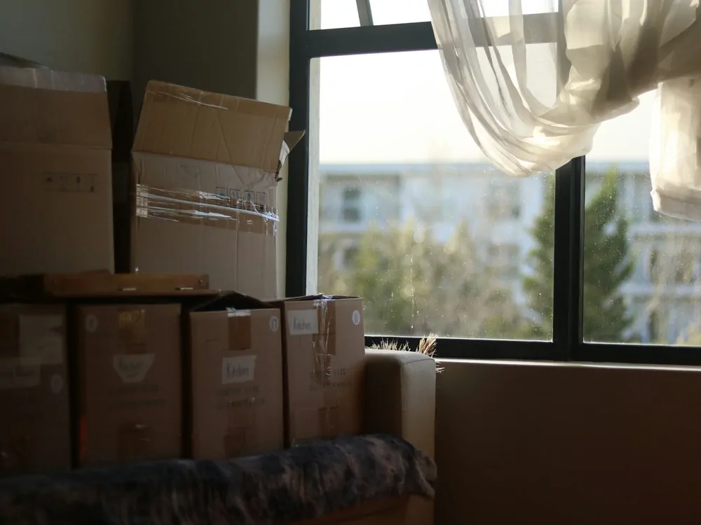

Put it back at move-out
Everything on this site comes off again. Here is the order to take it down in, and what to photograph.

Legal: This page is a practical checklist for undoing what you put up. It is general information, not legal advice, and it does not tell you what your lease requires or what a landlord may deduct. For a depositMoney you pay your landlord up front, refundable at move-out minus the cost of damage beyond normal wear and tear.Read the full entry you are actually in a dispute about, Your rights names who to call.
Why reversibility was the point
Every improvement on this site states whether it comes off again, and that is not a detail. It is the difference between an upgrade you are allowed to make and a change to somebody else's property. Move-out is when that promise gets tested.
The work is small if you did it the reversible way. If you kept the original parts in a box, most of this is an hour.
Take it down in this order
- Window film. Peel the film, then the tape. If the tape is stubborn, warm it with a hair dryer on low first so it lifts rather than tears. Pulling cold tape off painted trim is how paint comes with it.
- Weatherstripping and door sweeps. Adhesive strip peels. A screwed-on sweep unscrews, and the screw holes are the part to look at. If you drilled anything, this is what you agreed to put right.
- Curtains and rods. A tension rod lifts straight out. A bracketed rod leaves holes, which is why the curtains page says to ask before you drill.
- LED bulbs. Put the originals back and take your LEDs with you. They cost more than the bulbs you replaced, they last for years, and they fit the next place. This is the one item on the list worth carrying to the next apartment.
- Power strips, plug timers, draft stoppers. These were never fixed to anything. They go in the box.
- Thermostat. Set it back to whatever it was, and clear any schedule you programmed.
- Furniture. Put it back where it was, including whatever you moved off a radiator or a baseboard heater.
Photograph as you go
Take a photo of each spot after you have put it back, on the day you hand the keys over. Phone photos carry a date. Do the same walkthrough you did when you moved in, in the same order, so the two sets line up.
Photograph the whole room as well as the close-up. A close-up of clean trim proves the trim is clean and proves nothing about which trim it is.
What not to do
- Do not paint over anything to hide it. A patch of fresh paint is more conspicuous than the mark under it, and now there are two things to explain.
- Do not fill a hole you were told to leave. Ask what they want first.
- Do not leave the film on because it is cold and you are moving in February. It gets harder to remove the longer it stays, and it is not yours to leave behind.
- Do not throw away original bulbs, blinds or hardware during the tenancy. That box is the whole reason the change was reversible.
What to do next
- Moving to another rental in town? What to check before you sign is the viewing walkthrough.
- Closing an account? Read your bill shows what the final figures mean.
Sources
- U.S. Department of Energy — 5 Tips for Energy Saving for Renters
- Dartmouth Real Estate Office — Upper Valley Rentals
Last reviewed 2026-08-24.